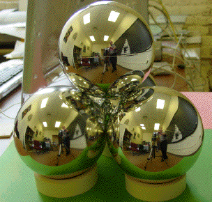
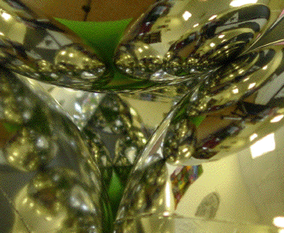

Place the fourth Christmas ornament in top of the other three, making a tetrahedron of Christmas ornaments.
On the right is a closer view looking into one of the spaces between the ornaments.
The fractal nature of the picture, as well as the reason for calling this an optical gasket lab, should be apparent.
|  |  |
Return to Procedure